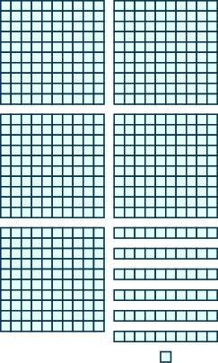

ગણતરીની સંખ્યાઓ અને પૂર્ણ સંખ્યાઓ ઓળખો
ગણતરીની સંખ્યાઓ
સંખ્યારેખા પર 0 થી 6 સુધીની સંખ્યાઓ એક-એકના સમાન અંતરે છે. જમણી તરફ જતાં સંખ્યાઓ મોટી થાય છે. ડાબી તરફ જતાં સંખ્યાઓ નાની થાય છે.
પૂર્ણ સંખ્યાઓ
ઉકેલ
- ⓐ ગણતરીની સંખ્યાઓનું પ્રથમ મૂલ્ય છે તેથી ગણતરીની સંખ્યા નથી. બધી ગણતરીની સંખ્યાઓ છે.
- ⓑ પૂર્ણ સંખ્યાઓમાં ગણતરીની સંખ્યાઓ ઉપરાંત આ સંખ્યાનો પણ સમાવેશ થાય છે: પૂર્ણ સંખ્યાઓ છે.
- ⓐ 2, 9, 241, 376
- ⓑ 0, 2, 9, 241, 376
- ⓐ 7, 13, 201
- ⓑ 0, 7, 13, 201
પૂર્ણ સંખ્યાઓને નમૂના દ્વારા દર્શાવો
અમેરિકી ચલણની નોટોના ત્રણ સમૂહ. $100ની 3 નોટો: 3 × $100 = $300. $10ની 7 નોટો: 7 × $10 = $70. $1ની 4 નોટો: 4 × $1 = $4.
$300 + $70 + $4 = $374. 300નો અંક 3, 70નો અંક 7 અને 4 લાલ રંગે દર્શાવ્યા છે. તીરો આ અંકોને 374ના અનુક્રમે સો, દશક અને એકમના અંક સાથે જોડે છે.
એક ખંડ 1 દર્શાવે છે. 10 ખંડોની આડી સળી 10 દર્શાવે છે. 10 હરોળ અને 10 સ્તંભના 100 ખંડોનો ચોરસ 100 દર્શાવે છે.
100 ખંડોનો 1 ચોરસ એટલે 1 સો; દરેકમાં 10 ખંડો ધરાવતી 3 સળીઓ એટલે 3 દશક; 8 છૂટા ખંડો એટલે 8 એકમ.
100 + 30 + 8 = 138. 100નો અંક 1, 30નો અંક 3 અને 8 લાલ રંગે દર્શાવ્યા છે. તીરો આ અંકોને 138ના અનુક્રમે સો, દશક અને એકમના અંક સાથે જોડે છે.
| અંક | સ્થાનકિંમત | સંખ્યા | કિંમત | કુલ કિંમત |
|---|---|---|---|---|
| સો | ||||
| દશક | ||||
| એકમ | ||||
દરેકમાં 100 ખંડો ધરાવતા 2 ચોરસ, 10 ખંડોની 1 આડી સળી અને 5 છૂટા ખંડો.
ઉકેલ
200 + 10 + 5 = 215. 200નો અંક 2, 10નો અંક 1 અને 5 લાલ રંગે દર્શાવ્યા છે. તીરો આ અંકોને 215ના અનુક્રમે સો, દશક અને એકમના અંક સાથે જોડે છે.
| અંક | સ્થાનકિંમત | સંખ્યા | કિંમત | કુલ કિંમત |
|---|---|---|---|---|
| સો | ||||
| દશક | ||||
| એકમ | ||||
100 ખંડોનો 1 ચોરસ, દરેકમાં 10 ખંડો ધરાવતી 7 આડી સળીઓ અને 6 છૂટા ખંડો.
દરેકમાં 100 ખંડો ધરાવતા 2 ચોરસ, દરેકમાં 10 ખંડો ધરાવતી 3 આડી સળીઓ અને 7 છૂટા ખંડો.
અંકની સ્થાનકિંમત ઓળખો
સ્થાનકિંમત
| સો ટ્રિલિયન | દસ ટ્રિલિયન | ટ્રિલિયન |
|---|---|---|
| સો બિલિયન | દસ બિલિયન | બિલિયન |
|---|---|---|
| સો મિલિયન | દસ મિલિયન | મિલિયન |
|---|---|---|
| 5 |
| સો હજાર | દસ હજાર | હજાર |
|---|---|---|
| 2 | 7 | 8 |
| સો | દશક | એકમ |
|---|---|---|
| 1 | 9 | 4 |
‘સ્થાનકિંમત’ શીર્ષકવાળો કોઠો: પંદર સ્તંભ અને 4 હરોળ. ત્રણ-ત્રણ સ્તંભના પાંચ સ્થાનસમૂહો છે. મથાળાં ટ્રિલિયન, બિલિયન, મિલિયન, હજાર અને એકમ છે. પછીની હરોળમાં સો ટ્રિલિયન, દસ ટ્રિલિયન, ટ્રિલિયન, સો બિલિયન, દસ બિલિયન, બિલિયન, સો મિલિયન, દસ મિલિયન, મિલિયન, સો હજાર, દસ હજાર, હજાર, સો, દશક અને એકમ છે. ત્યાર પછીની હરોળના પ્રથમ 8 ખાના ખાલી છે. નવમા સ્તંભથી અંકો 5, 2, 7, 8, 1, 9, 4 છે.
- અંક મિલિયનના સ્થાનમાં છે. તેની કિંમત છે
- અંક સો હજારના સ્થાનમાં છે. તેની કિંમત છે
- અંક દસ હજારના સ્થાનમાં છે. તેની કિંમત છે
- અંક હજારના સ્થાનમાં છે. તેની કિંમત છે
- અંક સોના સ્થાનમાં છે. તેની કિંમત છે
- અંક દશકના સ્થાનમાં છે. તેની કિંમત છે
- અંક એકમના સ્થાનમાં છે. તેની કિંમત છે
- ⓐ
- ⓑ
- ⓒ
- ⓓ
- ⓔ
ઉકેલ
| સો ટ્રિલિયન | દસ ટ્રિલિયન | ટ્રિલિયન |
|---|---|---|
| સો બિલિયન | દસ બિલિયન | બિલિયન |
|---|---|---|
| સો મિલિયન | દસ મિલિયન | મિલિયન |
|---|---|---|
| 6 | 3 |
| સો હજાર | દસ હજાર | હજાર |
|---|---|---|
| 4 | 0 | 7 |
| સો | દશક | એકમ |
|---|---|---|
| 2 | 1 | 8 |
‘સ્થાનકિંમતો’ શીર્ષકવાળા કોઠામાં પંદર સ્તંભ અને 2 હરોળ છે. ત્રણ-ત્રણ સ્તંભના પાંચ સ્થાનસમૂહો છે. પ્રથમ હરોળમાં સો ટ્રિલિયન, દસ ટ્રિલિયન, ટ્રિલિયન, સો બિલિયન, દસ બિલિયન, બિલિયન, સો મિલિયન, દસ મિલિયન, મિલિયન, સો હજાર, દસ હજાર, હજાર, સો, દશક અને એકમ છે. બીજી હરોળના પ્રથમ 7 ખાના ખાલી છે. આઠમા સ્તંભથી અંકો 6, 3, 4, 0, 7, 2, 1, 8 છે. પ્રથમ સ્થાનસમૂહનું નામ ટ્રિલિયન છે; તેમાં સો ટ્રિલિયન, દસ ટ્રિલિયન અને ટ્રિલિયન છે. બીજા બિલિયન સ્થાનસમૂહમાં સો બિલિયન, દસ બિલિયન અને બિલિયન છે. ત્રીજા મિલિયન સ્થાનસમૂહમાં સો મિલિયન, દસ મિલિયન અને મિલિયન છે. ચોથા હજાર સ્થાનસમૂહમાં સો હજાર, દસ હજાર અને હજાર છે. પાંચમા એકમ સ્થાનસમૂહમાં સો, દશક અને એકમ છે.
- ⓐ અંક હજારના સ્થાનમાં છે.
- ⓑ અંક દસ હજારના સ્થાનમાં છે.
- ⓒ અંક દશકના સ્થાનમાં છે.
- ⓓ અંક દસ મિલિયનના સ્થાનમાં છે.
- ⓔ અંક મિલિયનના સ્થાનમાં છે.
- ⓐ
- ⓑ
- ⓒ
- ⓓ
- ⓔ
- ⓐ દસ મિલિયન
- ⓑ દશક
- ⓒ સો હજાર
- ⓓ મિલિયન
- ⓔ એકમ
- ⓐ
- ⓑ
- ⓒ
- ⓓ
- ⓔ
- ⓐ બિલિયન
- ⓑ દસ હજાર
- ⓒ દશક
- ⓓ સો હજાર
- ⓔ સો મિલિયન
સ્થાનકિંમતની મદદથી પૂર્ણ સંખ્યાઓ શબ્દોમાં લખો
37,519,248
સ્થાનસમૂહો
મિલિયન
37
સાડત્રીસ મિલિયન
હજાર
519
પાંચસો ઓગણીસ હજાર
એકમ
248
બસો અડતાલીસ
અલ્પવિરામથી જુદા પડતા ત્રણ સમૂહ: 37 પર મિલિયન, 519 પર હજાર અને 248 પર એકમ લખેલું છે. નીચે 37 પાસેથી ‘સાડત્રીસ મિલિયન’, 519 પાસેથી ‘પાંચસો ઓગણીસ હજાર’ અને 248 પાસેથી ‘બસો અડતાલીસ’ તરફ તીર દોરેલાં છે.
પૂર્ણ સંખ્યાને શબ્દોમાં લખો.
- સૌથી ડાબા અંકથી શરૂ કરીને દરેક સ્થાનસમૂહની સંખ્યા શબ્દોમાં લખો, પછી સ્થાનસમૂહનું નામ લખો. એકમ સ્થાનસમૂહનું નામ લખશો નહીં.
- સ્થાનસમૂહોને જુદા પાડવા સંખ્યામાં અલ્પવિરામ વાપરો.
ઉકેલ
| સૌથી ડાબા અંક 8 થી શરૂ કરો. તે ટ્રિલિયનના સ્થાનમાં છે. | આઠ ટ્રિલિયન |
| જમણી બાજુનો પછીનો સ્થાનસમૂહ બિલિયન છે. | એકસો પાંસઠ બિલિયન |
| જમણી બાજુનો પછીનો સ્થાનસમૂહ મિલિયન છે. | ચારસો બત્રીસ મિલિયન |
| જમણી બાજુનો પછીનો સ્થાનસમૂહ હજાર છે. | અઠ્ઠાણું હજાર |
| સૌથી જમણી બાજુનો સ્થાનસમૂહ એકમ દર્શાવે છે. | સાતસો દસ |
8,165,432,098,710
સ્થાનસમૂહો
ટ્રિલિયન
8
આઠ ટ્રિલિયન
બિલિયન
165
એકસો પાંસઠ બિલિયન
મિલિયન
432
ચારસો બત્રીસ મિલિયન
હજાર
098
અઠ્ઠાણું હજાર
એકમ
710
સાતસો દસ
અલ્પવિરામથી જુદા પડતા પાંચ સમૂહ: 8 પર ટ્રિલિયન, 165 પર બિલિયન, 432 પર મિલિયન, 098 પર હજાર અને 710 પર એકમ લખેલું છે. નીચે 8 પાસેથી ‘આઠ ટ્રિલિયન’, 165 પાસેથી ‘એકસો પાંસઠ બિલિયન’, 432 પાસેથી ‘ચારસો બત્રીસ મિલિયન’, 098 પાસેથી ‘અઠ્ઠાણું હજાર’ અને 710 પાસેથી ‘સાતસો દસ’ તરફ તીર દોરેલાં છે.
ઉકેલ
327,577,529
સ્થાનસમૂહો
મિલિયન
327
હજાર
577
એકમ
529
અલ્પવિરામથી જુદા પડતા ત્રણ સમૂહ: 327 પર મિલિયન, 577 પર હજાર અને 529 પર એકમ લખેલું છે.
સ્થાનકિંમતની મદદથી પૂર્ણ સંખ્યાઓ અંકોમાં લખો
સ્થાનકિંમતની મદદથી પૂર્ણ સંખ્યા અંકોમાં લખો.
- સ્થાનસમૂહ દર્શાવતા શબ્દો ઓળખો. (યાદ રાખો કે એકમ સ્થાનસમૂહનું નામ ક્યારેય લખાતું નથી.)
- દરેક સ્થાનસમૂહમાં જરૂરી સ્થાનો દર્શાવવા ત્રણ ખાલી જગ્યા દોરો. અલ્પવિરામથી સ્થાનસમૂહોને જુદા પાડો.
- દરેક સ્થાનસમૂહની સંખ્યા ઓળખીને તેના અંકો યોગ્ય સ્થાનમાં મૂકો.
- ⓐ ત્રેપન મિલિયન, ચારસો એક હજાર, સાતસો બેતાલીસ
- ⓑ નવ બિલિયન, બસો છેતાલીસ મિલિયન, તોતેર હજાર, એકસો નેવ્યાસી
ઉકેલ
53,401,742
સ્થાનસમૂહો
મિલિયન
ત્રેપન મિલિયન
53
હજાર
ચારસો એક હજાર
401
એકમ
સાતસો બેતાલીસ
742
ત્રણ શબ્દસમૂહોમાંથી સંખ્યાઓ તરફ તીર દોરેલાં છે. પ્રથમ ‘ત્રેપન મિલિયન’ પર મિલિયન લખેલું છે અને તે 53 તરફ નિર્દેશ કરે છે. બીજો ‘ચારસો એક હજાર’ પર હજાર લખેલું છે અને તે 401 તરફ નિર્દેશ કરે છે. ત્રીજો ‘સાતસો બેતાલીસ’ પર એકમ લખેલું છે અને તે 742 તરફ નિર્દેશ કરે છે.
9,246,073,189
સ્થાનસમૂહો
બિલિયન
નવ બિલિયન
9
મિલિયન
બસો છેતાલીસ મિલિયન
246
હજાર
તોતેર હજાર
073
એકમ
એકસો નેવ્યાસી
189
ચાર શબ્દસમૂહોમાંથી સંખ્યાઓ તરફ તીર દોરેલાં છે. ‘નવ બિલિયન’ પર બિલિયન લખેલું છે અને તે 9 તરફ નિર્દેશ કરે છે. ‘બસો છેતાલીસ મિલિયન’ પર મિલિયન લખેલું છે અને તે 246 તરફ નિર્દેશ કરે છે. ‘તોતેર હજાર’ પર હજાર લખેલું છે અને તે 073 તરફ નિર્દેશ કરે છે. ‘એકસો નેવ્યાસી’ પર એકમ લખેલું છે અને તે 189 તરફ નિર્દેશ કરે છે.
ઉકેલ
77,000,000,000
સ્થાનસમૂહો
બિલિયન
77 બિલિયન
77
મિલિયન
000
હજાર
000
એકમ
000
ચાર શબ્દસમૂહોમાંથી સંખ્યાઓ તરફ તીર દોરેલાં છે. ‘77 બિલિયન’ પર બિલિયન લખેલું છે અને તે 77 તરફ નિર્દેશ કરે છે. બીજો શબ્દસમૂહ ખાલી છે; તેના પર મિલિયન લખેલું છે અને તે 000 તરફ નિર્દેશ કરે છે. ત્રીજો શબ્દસમૂહ ખાલી છે; તેના પર હજાર લખેલું છે અને તે 000 તરફ નિર્દેશ કરે છે. ચોથો શબ્દસમૂહ ખાલી છે; તેના પર એકમ લખેલું છે અને તે 000 તરફ નિર્દેશ કરે છે.
પૂર્ણ સંખ્યાઓને નજીકની સંખ્યામાં ફેરવો
70 થી 80 સુધીની સંખ્યારેખા પર એક-એકના સમાન અંતરે નિશાન છે. 70 અને 80 લાલ રંગે, બાકીની સંખ્યાઓ કાળા રંગે છે. સંખ્યારેખા પર 76 પાસે નારંગી બિંદુ છે.
70 થી 80 સુધીની સંખ્યારેખા પર એક-એકના સમાન અંતરે નિશાન છે. 70 અને 80 લાલ રંગે, બાકીની સંખ્યાઓ કાળા રંગે છે. સંખ્યારેખા પર 72 પાસે નારંગી બિંદુ છે.
70 થી 80 સુધીની સંખ્યારેખા પર એક-એકના સમાન અંતરે નિશાન છે. 70 અને 80 લાલ રંગે, બાકીની સંખ્યાઓ કાળા રંગે છે. સંખ્યારેખા પર 75 પાસે નારંગી બિંદુ છે.
દશકનું સ્થાન → 7
6 → 5 કરતાં મોટો છે
સંખ્યા 76. વાદળી રંગનું ‘દશકનું સ્થાન’ લખાણ 7 તરફ નિર્દેશ કરે છે. લાલ રંગનું ‘5 કરતાં મોટો છે’ લખાણ 6 તરફ નિર્દેશ કરે છે.
અંક 7 → 1 ઉમેરો
અંક 6 → 0 થી બદલો
76 ને સૌથી નજીકના દશકમાં ફેરવતાં 80 મળે છે.
સંખ્યા 76 માં 6 પર ચોકડી છે અને તેની તરફ નિર્દેશ કરતું તીર ‘0 થી બદલો’ કહે છે. 7 તરફ નિર્દેશ કરતું તીર ‘1 ઉમેરો’ કહે છે. 76 ની નીચે 80 લખેલું છે.
દશકનું સ્થાન → 7
2 → 5 કરતાં નાનો છે
સંખ્યા 72. વાદળી રંગનું ‘દશકનું સ્થાન’ લખાણ 7 તરફ નિર્દેશ કરે છે. લાલ રંગનું ‘5 કરતાં નાનો છે’ લખાણ 2 તરફ નિર્દેશ કરે છે.
અંક 7 → 1 ઉમેરશો નહીં
અંક 2 → 0 થી બદલો
સંખ્યા 72 માં 2 પર ચોકડી છે અને તેની તરફ નિર્દેશ કરતું તીર ‘0 થી બદલો’ કહે છે. 7 તરફ નિર્દેશ કરતું તીર ‘1 ઉમેરશો નહીં’ કહે છે. 72 ની નીચે 70 લખેલું છે.
પૂર્ણ સંખ્યાને આપેલા સ્થાન મુજબ સૌથી નજીકની સંખ્યામાં ફેરવો.
- આપેલું સ્થાન શોધો. તે સ્થાનના અંકની ડાબી બાજુના અંકો બદલાતા નથી. પરંતુ આપેલા સ્થાનનો અંક 9 હોય તો ડાબી બાજુના અંકો બદલાઈ શકે છે. (પગલું 3 જુઓ.)
- આપેલા સ્થાનની તરત જમણી બાજુના અંકની નીચે લીટી દોરો.
- તપાસો કે આ અંક નીચેની સંખ્યા કરતાં મોટો છે કે તેના જેટલો છે:
- હા—ઉમેરો આપેલા સ્થાનના અંકમાં. તે અંક 9 હોય, તો તેને 0 થી બદલો અને તરત ડાબી બાજુના અંકમાં 1 ઉમેરો. તે અંક પણ 9 હોય, તો આ પગલું ફરી કરો.
- ના—આપેલા સ્થાનનો અંક બદલશો નહીં.
- આપેલા સ્થાનની જમણી બાજુના બધા અંકોને શૂન્યથી બદલો.
ઉકેલ
| દશકનું સ્થાન શોધો. | 843 દશકનું સ્થાન → 4 843 માં 4 તરફ ‘દશકનું સ્થાન’ લખેલું તીર છે. |
| દશકના સ્થાનની તરત જમણી બાજુના અંકની નીચે લીટી દોરો. | 843 843 માં 3 નીચે લીટી દોરેલી છે. |
| 3 એ 5 કરતાં નાનો હોવાથી દશકના સ્થાનનો અંક બદલશો નહીં. | 843 843 માં 3 નીચે લીટી દોરેલી છે. |
| દશકના સ્થાનની જમણી બાજુના બધા અંકોને શૂન્યથી બદલો. | 840 840 માં 0 નીચે લીટી દોરેલી છે. |
| 843 ને સૌથી નજીકના દશકમાં ફેરવતાં 840 મળે છે. |
- ⓐ
- ⓑ
ઉકેલ
| ⓐ | |
| સોનું સ્થાન શોધો. | 23,658 સોનું સ્થાન → 6 23,658 માં અંક 6 તરફ ‘સોનું સ્થાન’ લખેલું તીર સ્થાનકિંમત સમજાવે છે. |
| સોના સ્થાનની તરત જમણી બાજુનો અંક 5 છે. સોના સ્થાનની તરત જમણી બાજુના અંકની નીચે લીટી દોરો. | 23,658 23,658 માં અંક 5 ની નીચે આડી લીટી દોરેલી છે. |
| 5 એ 5 કરતાં મોટો કે તેના જેટલો હોવાથી સોના સ્થાનના અંકમાં 1 ઉમેરીને મોટી સંખ્યા તરફ ગોળ કરો. પછી સોના સ્થાનની જમણી બાજુના બધા અંકોને શૂન્યથી બદલો. | 23,658 અંક 6 → 1 ઉમેરો અંકો 5, 8 → 0 થી બદલો 23,700 23,658 માં અંક 6 તરફના તીર પર ‘1 ઉમેરો’ અને અંકો 58 તરફના તીર પર ‘શૂન્યથી બદલો’ લખેલું છે. પરિણામ 23,700 છે. આમ, 23,658 ને સૌથી નજીકના સોમાં ફેરવતાં 23,700 મળે છે. |
| ⓑ | |
| સોનું સ્થાન શોધો. | 3,978 સોનું સ્થાન → 9 ચાર અંકની સંખ્યા 3,978 માં સોના સ્થાનના અંક 9 તરફ તીર છે અને ઉપર ‘સોનું સ્થાન’ લખેલું છે. |
| સોના સ્થાનની તરત જમણી બાજુના અંકની નીચે લીટી દોરો. | 3,978 3,978 માં અંક 7 ની નીચે આડી લીટી દોરેલી છે. |
| સોના સ્થાનની તરત જમણી બાજુનો અંક 7 છે. 7 એ 5 કરતાં મોટો કે તેના જેટલો હોવાથી 9 માં 1 ઉમેરીને મોટી સંખ્યા તરફ ગોળ કરો. પછી સોના સ્થાનની જમણી બાજુના બધા અંકોને શૂન્યથી બદલો. | 3,978 અંક 9 → 1 ઉમેરો 9 + 1 = 10 સોના સ્થાનમાં 0 લખો. હજારના સ્થાનમાં 1 ઉમેરો. અંકો 7, 8 → 0 થી બદલો 4,000 3,978 ને સૌથી નજીકના સોમાં ફેરવવાનું ચિત્ર. સોના સ્થાનના 9 માં 1 ઉમેરતાં 10 થાય છે: સોના સ્થાનમાં 0 લખો અને હજારના સ્થાનમાં 1 ઉમેરો, એટલે 3 + 1 = 4. દશક અને એકમના અંકોને શૂન્યથી બદલતાં 4,000 મળે છે. આમ, 3,978 ને સૌથી નજીકના સોમાં ફેરવતાં 4,000 મળે છે. |
- ⓐ
- ⓑ
ઉકેલ
| ⓐ | |
| હજારનું સ્થાન શોધો. હજારના સ્થાનની તરત જમણી બાજુના અંકની નીચે લીટી દોરો. | 147,032 હજારનું સ્થાન → 7 147,032 માં અંક 7 તરફ ‘હજારનું સ્થાન’ લખેલું તીર છે. |
| હજારના સ્થાનની તરત જમણી બાજુનો અંક 0 છે. 0 એ 5 કરતાં નાનો હોવાથી હજારના સ્થાનનો અંક બદલતા નથી. | 147,032 સફેદ પૃષ્ઠભૂમિ પર ઘાટા કાળા અક્ષરોમાં 147,032 છે. સોના સ્થાનના 0 ની નીચે લીટી છે. |
| પછી હજારના સ્થાનની જમણી બાજુના બધા અંકોને શૂન્યથી બદલીએ છીએ. | 147,000 સંખ્યા 147,000 લખેલી છે. આમ, 147,032 ને સૌથી નજીકના હજારમાં ફેરવતાં 147,000 મળે છે. |
| ⓑ | |
| હજારનું સ્થાન શોધો. | 29,504 હજારનું સ્થાન → 9 29,504 માં અંક 9 તરફ તીર છે અને તે હજારના સ્થાનમાં છે એવું લખેલું છે. |
| હજારના સ્થાનની તરત જમણી બાજુના અંકની નીચે લીટી દોરો. | 29,504 29,504 માં અંક 5 ની નીચે આડી લીટી દોરેલી છે. |
| હજારના સ્થાનની તરત જમણી બાજુનો અંક 5 છે. 5 એ 5 કરતાં મોટો કે તેના જેટલો હોવાથી 9 માં 1 ઉમેરીને મોટી સંખ્યા તરફ ગોળ કરો. પછી હજારના સ્થાનની જમણી બાજુના બધા અંકોને શૂન્યથી બદલો. | 29,504 અંક 9 → 1 ઉમેરો 9 + 1 = 10 હજારના સ્થાનમાં 0 લખો. દસ હજારના સ્થાનમાં 1 ઉમેરો. અંકો 5, 0, 4 → 0 થી બદલો 30,000 29,504 ને સૌથી નજીકના હજારમાં ફેરવવાનું ચિત્ર. હજારના સ્થાનમાં 1 ઉમેરતાં 9 + 1 = 10 થાય છે: ત્યાં 0 લખો અને દસ હજારના સ્થાનમાં 1 ઉમેરો. છેલ્લા ત્રણ અંકોને શૂન્યથી બદલતાં 30,000 મળે છે. આમ, 29,504 ને સૌથી નજીકના હજારમાં ફેરવતાં 30,000 મળે છે. |
વધારાનાં ઑનલાઇન સાધનો જુઓ
મુખ્ય મુદ્દા
સ્થાનકિંમત
| સો ટ્રિલિયન | દસ ટ્રિલિયન | ટ્રિલિયન |
|---|---|---|
| સો બિલિયન | દસ બિલિયન | બિલિયન |
|---|---|---|
| સો મિલિયન | દસ મિલિયન | મિલિયન |
|---|---|---|
| 5 |
| સો હજાર | દસ હજાર | હજાર |
|---|---|---|
| 2 | 7 | 8 |
| સો | દશક | એકમ |
|---|---|---|
| 1 | 9 | 4 |
‘સ્થાનકિંમત’ શીર્ષકવાળો કોઠો: પંદર સ્તંભ અને 4 હરોળ. ત્રણ-ત્રણ સ્તંભના પાંચ સ્થાનસમૂહો છે. મથાળાં ટ્રિલિયન, બિલિયન, મિલિયન, હજાર અને એકમ છે. પછીની હરોળમાં સો ટ્રિલિયન, દસ ટ્રિલિયન, ટ્રિલિયન, સો બિલિયન, દસ બિલિયન, બિલિયન, સો મિલિયન, દસ મિલિયન, મિલિયન, સો હજાર, દસ હજાર, હજાર, સો, દશક અને એકમ છે. ત્યાર પછીની હરોળના પ્રથમ 8 ખાના ખાલી છે. નવમા સ્તંભથી અંકો 5, 2, 7, 8, 1, 9, 4 છે.
- પૂર્ણ સંખ્યાને શબ્દોમાં લખો.
- સૌથી ડાબા અંકથી શરૂ કરીને દરેક સ્થાનસમૂહની સંખ્યા શબ્દોમાં લખો, પછી સ્થાનસમૂહનું નામ લખો. એકમ સ્થાનસમૂહનું નામ લખશો નહીં.
- સ્થાનસમૂહોને જુદા પાડવા સંખ્યામાં અલ્પવિરામ વાપરો.
- સ્થાનકિંમતની મદદથી પૂર્ણ સંખ્યા અંકોમાં લખો.
- સ્થાનસમૂહ દર્શાવતા શબ્દો ઓળખો. (યાદ રાખો કે એકમ સ્થાનસમૂહનું નામ ક્યારેય લખાતું નથી.)
- દરેક સ્થાનસમૂહમાં જરૂરી સ્થાનો દર્શાવવા ત્રણ ખાલી જગ્યા દોરો.
- દરેક સ્થાનસમૂહની સંખ્યા ઓળખીને તેના અંકો યોગ્ય સ્થાનમાં મૂકો.
- પૂર્ણ સંખ્યાને આપેલા સ્થાન મુજબ સૌથી નજીકની સંખ્યામાં ફેરવો.
- આપેલું સ્થાન શોધો. તે સ્થાનના અંકની ડાબી બાજુના અંકો બદલાતા નથી. પરંતુ આપેલા સ્થાનનો અંક 9 હોય તો ડાબી બાજુના અંકો બદલાઈ શકે છે. (પગલું 3 જુઓ.)
- આપેલા સ્થાનની તરત જમણી બાજુના અંકની નીચે લીટી દોરો.
- તપાસો કે આ અંક 5 કરતાં મોટો છે કે તેના જેટલો છે. હા—આપેલા સ્થાનના અંકમાં 1 ઉમેરો. તે અંક 9 હોય, તો તેને 0 થી બદલો અને તરત ડાબી બાજુના અંકમાં 1 ઉમેરો. તે અંક પણ 9 હોય, તો આ પગલું ફરી કરો. ના—આપેલા સ્થાનનો અંક બદલશો નહીં.
- આપેલા સ્થાનની જમણી બાજુના બધા અંકોને શૂન્યથી બદલો.
અભ્યાસથી નિપુણતા
- ⓐ 5, 125
- ⓑ 0, 5, 125
- ⓐ 50, 221
- ⓑ 0, 50, 221

ચિત્રમાં ત્રણ પ્રકારના ભાગ છે. પહેલા ભાગમાં પાંચ ચોરસ છે; દરેક ચોરસમાં 100 ખંડ છે, 10 ખંડ પહોળાઈમાં અને 10 ખંડ ઊંચાઈમાં. બીજા ભાગમાં છ આડી સળીઓ છે; દરેકમાં 10 ખંડ છે. ત્રીજા ભાગમાં 1 અલગ ખંડ છે.

ચિત્રમાં ત્રણ પ્રકારના ભાગ છે. પહેલા ભાગમાં ત્રણ ચોરસ છે; દરેક ચોરસમાં 100 ખંડ છે, 10 ખંડ પહોળાઈમાં અને 10 ખંડ ઊંચાઈમાં. બીજા ભાગમાં આઠ આડી સળીઓ છે; દરેકમાં 10 ખંડ છે. ત્રીજા ભાગમાં 4 અલગ ખંડ છે.

ચિત્રમાં બે પ્રકારના ભાગ છે. પહેલા ભાગમાં ચાર ચોરસ છે; દરેક ચોરસમાં 100 ખંડ છે, 10 ખંડ પહોળાઈમાં અને 10 ખંડ ઊંચાઈમાં. બીજા ભાગમાં 7 અલગ ખંડ છે.

ચિત્રમાં બે પ્રકારના ભાગ છે. પહેલા ભાગમાં છ ચોરસ છે; દરેક ચોરસમાં 100 ખંડ છે, 10 ખંડ પહોળાઈમાં અને 10 ખંડ ઊંચાઈમાં. બીજા ભાગમાં 2 આડી સળીઓ છે; દરેકમાં 10 ખંડ છે.
- ⓐ 9
- ⓑ 6
- ⓒ 0
- ⓓ 7
- ⓔ 5
- ⓐ હજારનું સ્થાન
- ⓑ સોનું સ્થાન
- ⓒ દશકનું સ્થાન
- ⓓ દસ હજારનું સ્થાન
- ⓔ સો હજારનું સ્થાન
- ⓐ 9
- ⓑ 3
- ⓒ 2
- ⓓ 8
- ⓔ 7
- ⓐ 8
- ⓑ 6
- ⓒ 4
- ⓓ 7
- ⓔ 0
- ⓐ સો હજારનું સ્થાન
- ⓑ મિલિયનનું સ્થાન
- ⓒ હજારનું સ્થાન
- ⓓ દશકનું સ્થાન
- ⓔ દસ હજારનું સ્થાન
- ⓐ 8
- ⓑ 4
- ⓒ 2
- ⓓ 6
- ⓔ 7
- ⓐ
- ⓑ
- ⓐ 390
- ⓑ 2,930
- ⓐ
- ⓑ
- ⓐ
- ⓑ
- ⓐ 13,700
- ⓑ 391,800
- ⓐ
- ⓑ
- ⓐ
- ⓑ
- ⓐ 1,490
- ⓑ 1,500
- ⓐ
- ⓑ
- ⓐ
- ⓑ
- ⓐ
- ⓑ
- ⓐ
- ⓑ
રોજિંદા જીવનમાં ગણિત
- ⓐ દસ ડૉલર
- ⓑ સો ડૉલર
- ⓒ હજાર ડૉલર
- ⓓ દસ હજાર ડૉલર
- ⓐ $24,490
- ⓑ $24,500
- ⓒ $24,000
- ⓓ $20,000
- ⓐ દસ ડૉલર
- ⓑ સો ડૉલર
- ⓒ હજાર ડૉલર
- ⓓ દસ હજાર ડૉલર
- ⓐ બિલિયન લોકો
- ⓑ સો મિલિયન લોકો
- ⓒ મિલિયન લોકો
- ⓐ
- ⓑ
- ⓒ
- ⓐ સો મિલિયન કિલોમીટર
- ⓑ દસ મિલિયન કિલોમીટર
- ⓒ મિલિયન કિલોમીટર
લેખન અભ્યાસ
સ્વમૂલ્યાંકન
| હું આ કરી શકું છું… | વિશ્વાસપૂર્વક | થોડી મદદથી | ના—મને સમજાતું નથી! |
|---|---|---|---|
| ગણતરીની સંખ્યાઓ અને પૂર્ણ સંખ્યાઓ ઓળખી શકું છું. | |||
| પૂર્ણ સંખ્યાઓને નમૂના દ્વારા દર્શાવી શકું છું. | |||
| અંકની સ્થાનકિંમત ઓળખી શકું છું. | |||
| સ્થાનકિંમતનો ઉપયોગ કરીને પૂર્ણ સંખ્યાઓ શબ્દોમાં કહી શકું છું. | |||
| સ્થાનકિંમતનો ઉપયોગ કરીને પૂર્ણ સંખ્યાઓ અંકોમાં લખી શકું છું. | |||
| પૂર્ણ સંખ્યાઓને નજીકની સ્થાનકિંમતમાં ફેરવી શકું છું. |
પૂર્ણ સંખ્યાઓ, સ્થાનકિંમત અને સંખ્યાઓને ગોળ કરવાની સમજનું મૂલ્યાંકન કરવા માટેનું કોષ્ટક. દરેક કૌશલ્ય માટે વિકલ્પો છે: વિશ્વાસપૂર્વક, થોડી મદદથી, અથવા ના—મને સમજાતું નથી!